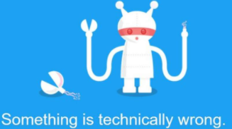

Technology
Biden article reignites social media bias claims
Twitter's chief says the way it communicated its decision to restrict an article was "unacceptable".
15 October 2020 Technology
 Sign in
Sign in
Twitter's chief says the way it communicated its decision to restrict an article was "unacceptable".
15 October 2020 Technology
Twitter suspends fake Trump supporter accounts
14 October 2020
Why iPhone 12 marks dawn of a new chip technology
13 October 2020
Technology
Drone used to bust drug deal in China
14 October 2020
Technology
Bezos' rocket tests Nasa Moon landing tech
14 October 2020
Science & Environment
Women in technology: '2020 has been a hard slog'
13 October 2020
Technology
Fifa 21 review: 'Uninspiring but fun'
13 October 2020
Sports
Google robots will roam fields inspecting crops
The project will analyse every leaf on every crop, helping farmers tend the fields.
14 October 2020 Technology
YouTube bans misleading Covid-19 vaccine videos
The initiative follows Facebook's earlier pledge to ban ads that discourage vaccinations.
14 October 2020 Technology
'Mystery jetpack-wearer' spotted again in LA skies
The new sighting on Wednesday was at 6,000ft (1,829m), seven miles from the airport, officials say.
15 October 2020 US & Canada
Zoom launches paid-for live events
OnZoom, a live-events platform, will sell tickets for "online experiences".
15 October 2020 Technology
iPhone 12: Apple makes jump to 5G
The new iPhone line-up could trigger a "super-cycle" of consumer upgrades.
14 October 2020 Technology
How to win at video conferencing
LJ Rich looks at the tips and tricks to help you make video calls like an expert.
14 October 2020 Technology
Latest Updates
2 hours
British Airways fined £20m over data breach
The fine is the largest ever issued by the Information Commissioner's Office.
3 hours
Twitter suffers major platform outage
The company says the issue was caused by an "inadvertent change" it made to its internal systems.
3 hours
'We are in our skin for life, not for likes'
Can the use of Instagram filters - which change the tone, colour and shape of your face - be a form of racial discrimination?
4 hours
New jets promise to revive supersonic travel
Almost 20 years after Concorde was retired, new supersonic passenger aircraft are finally emerging.
4 hours
YouTube cracks down on QAnon conspiracy theory
The social media site says it is taking tougher action to "curb hate and harassment" on its platform.
5 hours
MPs to investigate how artists are paid for streams
A new inquiry will examine whether artists and songwriters are paid fairly by services like Spotify.
6 hours
Broadband firm expands creating 140 jobs
Spectrum says it hopes to push its ultrafast fibre network to "at least 150,000" Welsh homes.
Find me here